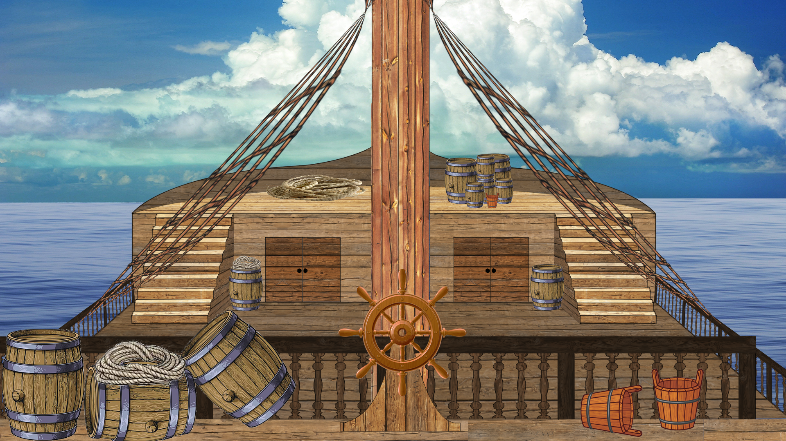
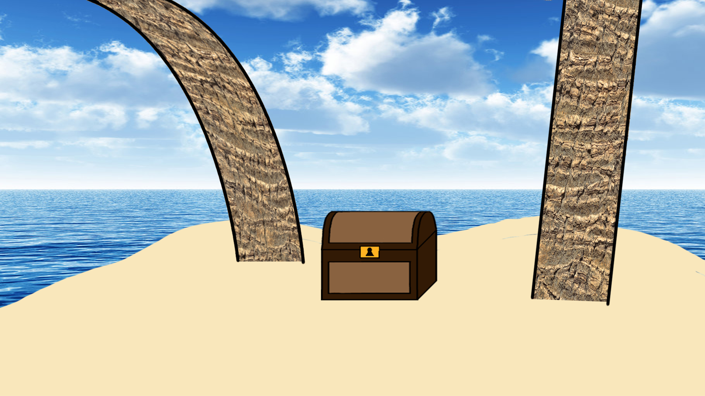
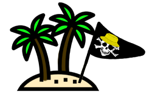
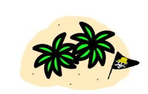
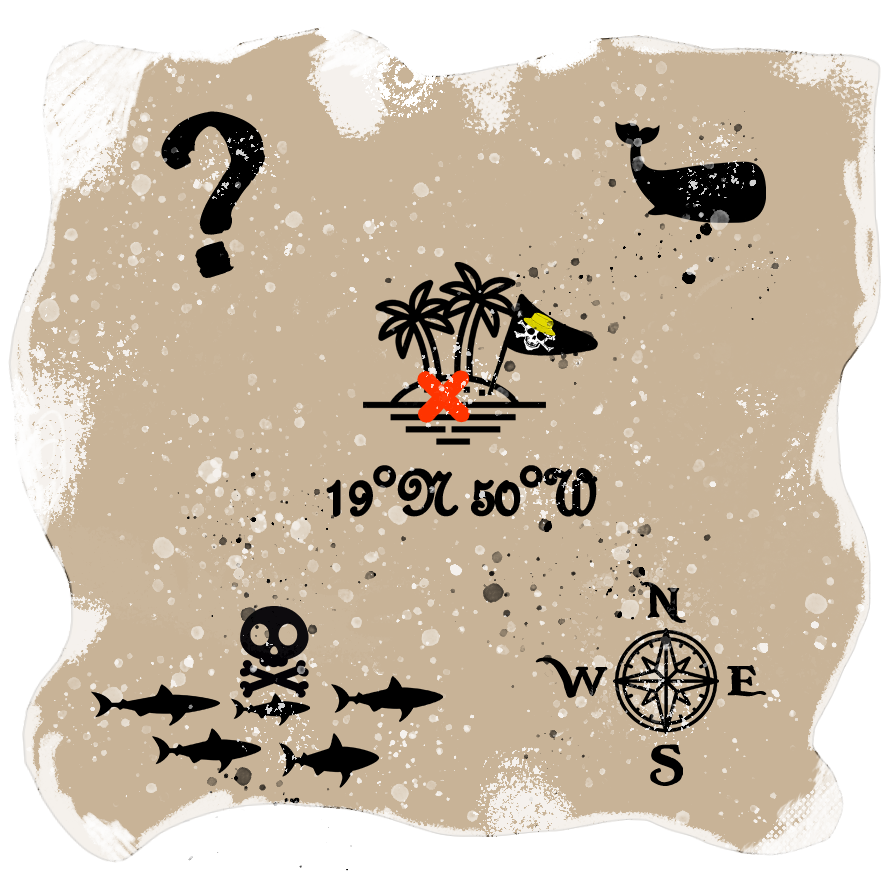
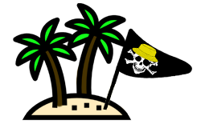
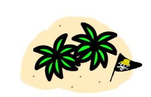
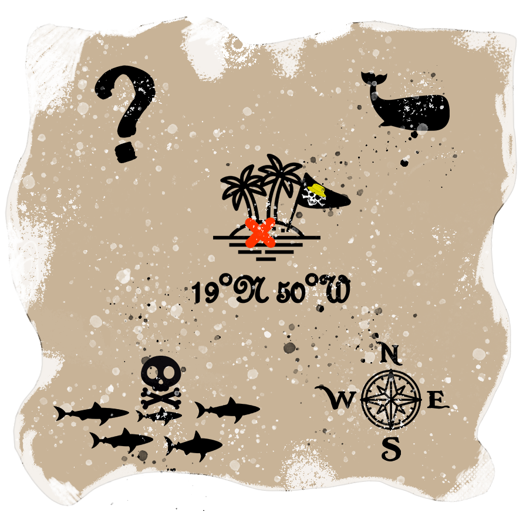

Code Game Jam 5ième édition (Année scolaire 2020-2021)
Le projet
La Code Game Jam est un évenement annuel organisé au sein de l'IUT de Montpellier-Sète, j'ai eu la chance d'y participer avec quelques amis pour la 4ième édition (en janvier 2020). Le principe de cet évènement est semblable à n'importe quelle game jam : En effet, le but est de créer un jeu video dans un temps imparti, ici c'état en un peu plus de 24h et de soumettre tous les jeux à un jury qui établie un top 3. >Nous avons donc eu l'occasion de créer un jeu pour la seconde fois et cela à encore été une expérience très enrichissante. Dans ce projet je me suis occupé de tout ce qui est graphique, j'ai donc déssiner les personnages, la carte de jeu et créer une animation, ainsi que des objets. Voici une image du jeu que nous avons produit :
Ce que j'ai réalisé dans ce projet
Voici le gros de mon travail sur ce projet, le bateau sur lequel on fait le tir au goéland, je l'ai déssiné de ma main, seuls quelques assets et certaines textures ne sont pas de moi:
Voici également les assets que j'ai réalisé pour ce jeu, ainsi que l'animation de vol du goélan que j'ai réalisé :



 





Ce que j'ai appris dans ce projet
Dans ce projet, j'ai appris a déssiner en temps limité, de plus, j'ai eu l'occasion de m'améliorer en dessin. Notamment par rapport au perspectives, en effet, grâce au dessin du décors de bateau que j'ai pu déssiner (voir plus haut), j'ai pu m'améliorer en grilles de perspectives ainsi qu'en respect de la perspective. Il est certain que la perspective n'est pas parfait, cependant c'était la première fois que j'ai eu a faire quelque chose dans une perspective telle, et qui plus est en temps limité, je suis donc très satisfait et fier de ce que j'ai pu réaliser. De plus, j'ai également appris a faire une animation grâce au logiciel photoshop, en dessinant ou modifiant un dessin pour créer plusieurs poses différentes, puis en les reliant grâce a la timeline de photoshop, pour créer le mouvement (voir le gif plus haut du goéland en vol qui illustre mes propos). Ce projet a donc été une bonne occasion de m'améliorer et de me perfectionner techniquement dans mes compétences d'infographie.